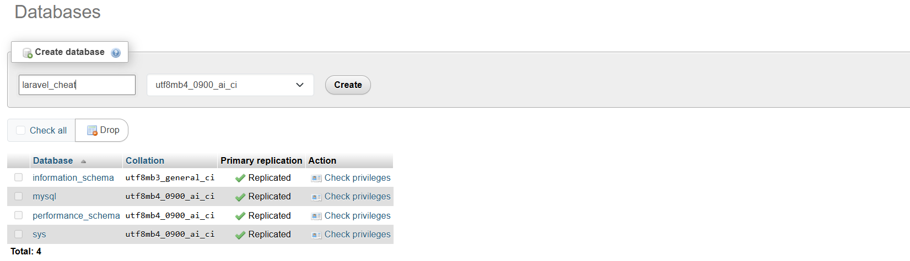
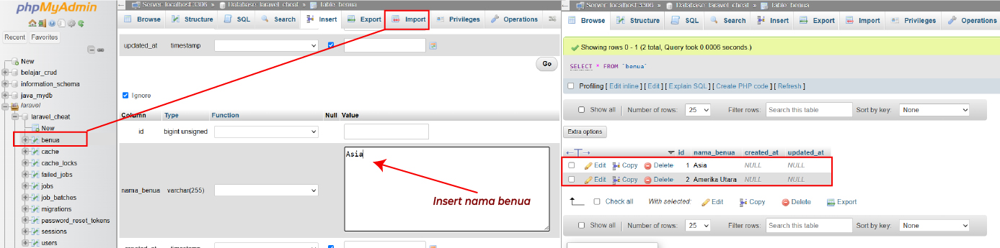
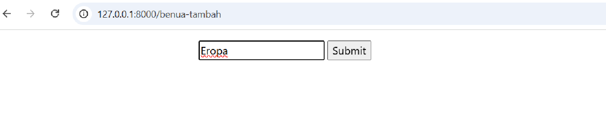

LARAVEL CHEATSHEET : CRUD - Nama-Nama Benua
Ananda Daniswara - Skylotus DesignMenu Utama | Install dan Persiapan
01. Target Tabel: benua MySQL
Membuat Tabel relasi untuk nama-nama benua, nama-nama negara, dan gambar peta
02. Membuat Database
Jalankan Laragon, lalu pergike phpMyAdmindan, dan buat database baru
03. Membuat Project
Siapkan folder kosong di File Explorer lalu buat project baru Laravel (versi terakhir) pada direktori saat ini
CMD: composer create-project laravel/laravel .
# problem:
Failed to download laravel/laravel from dist: The zip extension and unzip/7z commands
are both missing, skipping. The php.ini used by your command-line PHP is:
C:\laragon\bin\php\php-8.3.33-Win32-vs16-x64\php.ini
# solver:
hapus ; sebelum extension=zip di dalam php.ini
04. Setting file .env
Uncomment bagian DB_ pada setting .env lalu atur value sesuai dengan database yang kita miliki
DB_CONNECTION=mysql
DB_HOST=127.0.0.1
DB_PORT=3306
DB_DATABASE=nama_database
DB_USERNAME=username
DB_PASSWORD=password
05. Jalankan Server
CMD: php artisan serve
# Problem:
database bawaan laravel belum di-migrate
# Solver:
CMD: php artisan migrate
06. Membuat File Pertama
Pergi ke direktori resource/views lalu buat file bernama belajar_laravel.blade.php
<!DOCTYPE html>
<html lang="en">
<head>
<meta charset="UTF-8">
<meta name="viewport" content="width=device-width, initial-scale=1.0">
<title>Belajar Laravel</title>
</head>
<body>
<h1>SELAMAT DATANG</h1>
<h4>Di Les Privat PHP Laravel - Rumah-Belajar.com</h4>
</body>
</html>
07. Membuat Route
Pergi ke direktori routes, cari file web.php dan tambah kode berikut untuk membuka file belajar_laravel.blade.php
Route::get('/latihan', function () {
return view('belajar_laravel');
});
http://127.0.0.1:8000/latihan
08. Membuat Hyperlink
Kembali ke file belajar_laravel.blade.php lalu buat hyperlink untuk daftar nama-nama benua:
<h1>SELAMAT DATANG</h1>
<h4>Di Les Privat PHP Laravel - Rumah-Belajar.com</h4>
<hr><br>
<h3>Belajar CRUD Laravel</h3>
<a href="/benua">Daftar Nama Benua di Dunia</a> <!--Hyperlink pertama-->
09. Route: /benua
Tambahkan route untuk /benua di routes/web.php
Route::get('/latihan', function () {
return view('belajar_laravel');
});
Route::get('/benua', [BenuaController::class, 'benua_tampil']);
# problem
Target class [BenuaController] does not exist.
# solver
use App\Http\Controllers\BenuaController;
10. Membuat BenuaController
Buat controller BenuaController
CMD: php artisan make:controller BenuaController
11. Atur Controller
Buka BenuaController di direktori app/Http/Controllers, lalu tambahkan metode benua_tampil di dalam class
public function benua_tampil()
{
return view('benua_daftar');
}
12. Membuat File: benua_daftar.blade.php
Buka kembali direktori routes/views, dan buat file bernama benua_daftar.blade.php
<div>
<h4>Daftar Nama-Nama Benua</h4><hr><br>
</div>
13. Reload: /latihan
Reload http://127.0.0.1:8000/latihan di browser lalu klik tombol Hyperlink Nama-Nama Benua atau pergi ke:
http://127.0.0.1:8000/benua
14. Membuat Migration
Membuat file migration untuk membuat tabel benua di MySQL
CMD: php artisan make:migration create_benua_table
15. Ubah File Migration
Buka file migration create_benua_table yang adadi direktori database/migrations lalu ubah menjadi:
public function up(): void
{
Schema::create('benua', function (Blueprint $table) {
$table->id();
$table->string('nama_benua', 255);
$table->timestamps();
});
}
CMD: php artisan migrate
16. Insert Tabel Benua
Kembali ke phpMyAdmin, cari tabel benua, lalu nsert manual tabel benua dengan minimal 2 nama-nama benua
27. Membuat Model
Buat model dengan nama Benua untuk mengambil data langsung dari database MySQL
CMD: php artisan make:model Benua
18. Model dan Controller
Buka BenuaController di direktori app/Http/Controllers, lalu panggil model Benua untuk di kirim ke benua_daftar.blade.php
public function benua_tampil()
{
$benuaModel = Benua::all();
return view('benua_daftar', ["data_benua" => $benuaModel]);
}
# solver
use App\Models\Benua;
19. Ubah benua_daftar.blade.php
Buka kembali benua_daftar.blade.php yang dibuat di direktori routes/views, lalu tambahkan
<div>
<h4>Daftar Nama-Nama Benua</h4><hr><br>
<ul>
@foreach($data_benua as $benua)
<li>
{{$benua->nama_benua}}
</li>
@endforeach
</ul>
</div>
20. Reload: /benua
Reload http://127.0.0.1:8000/benua di browser
# problem:
SQLSTATE[42S02]: Base table or view not found: 1146 Table 'laravel_cheat.benuas' doesn't exist
(Connection: mysql, Host: 127.0.0.1, Port: 3306, Database: laravel_cheat, SQL: select * from `benuas`)
# solver:
Tambahakan protected $table = "benua"; di dalam class model Benua
21. Extends dan Section
Pergi ke Tutorial Navbar untuk menambahkan Extends dan Section
<a href="/latihan">Home</a> | <a href="/benua">Daftar Nama-Nama Benua</a><hr><br><br>
@yield('konten_utama')
@extends('navbar/navbar')
@section('konten_utama')
<!-- Konten utama diletakan di sini -->
@endsection
22. Tambah Data
Kembali ke benua_daftar.blade.php, buatkan hyperlink untuk halaman form tambah data nama-nama benua
<ul>
@foreach($data_benua as $benua)
<li>
{{$benua->nama_benua}}
</li>
@endforeach
</ul><br>
<a href="/benua-tambah">Tambah+</a>
23. Route: /benua-tambah
Buat route untuk /benua-tambah di routes/web.php yang akan menjalankan metode benua_tambah pada BenuaController
Route::get('/benua-tambah', [BenuaController::class, 'benua_tambah']);
24. Metode: benua_tambah
Buat metode untuk benua_tambah di BenuaController untuk membuka benua_tambah_form.blade.php
public function benua_tambah()
{
return view('benua_tambah_form');
}
25. Buat File: benua_tambah_form.blade.php
Buat file benua_tambah_form.blade.php di direktori resources/views, gunakan Extends dan Section
@extends('navbar/navbar')
@section('konten_utama')
<form action="/benua-tambah-proses" method="post">
@csrf
<input type="text" name="nama_benua">
<input type="submit" name="simpan">
</form>
@endsection
#problem
The GET method is not supported for route benua-tambah-proses. Supported methods: POST.
# solver
Pastikan form memiliki method="post"
26. Route: /benua-tambah-proses
Route::post('/benua-tambah-proses', [BenuaController::class, 'benua_tambah_proses']);
27. Metode: benua_tambah_proses
Di BenuaController, tambahkan metode benua_tambah_proses
public function benua_tambah_proses(Request $request)
{
$dt_benua = Benua::create($request->all());
return redirect('/benua');
}
# solver
use Illuminate\Http\Request;
28. Reload: /benua
Klik tombol Hyperlink Tambah+ dihalaman daftar benua atau pergi ke:
http://127.0.0.1:8000/benua-tambah

# problem:
Add [_token] to fillable property to allow mass assignment on [App\Models\Benua].
# solver:
Tambahkan protected $fillable = ["nama_benua"]; di dalam class model Benua
# atau
Tambahkan protected $guarded = []; di dalam class model Benua
21. Membuat Halaman Detail
Next: Tutorial Halaman Detail untuk detail benua yang dipilih
<ul>
@foreach($data_benua as $benua)
<li>
<a href="/benua-detail/{{$benua->id}}">{{$benua->nama_benua}}</a>
</li>
@endforeach
</ul><